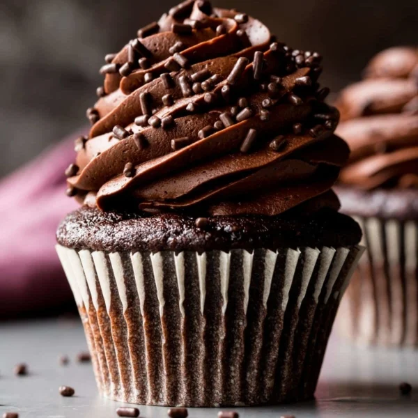

Chocolate Cupcake Recipie
These super moist chocolate cupcakes pack TONS of chocolate flavor in each cupcake wrapper! Made from simple everyday ingredients, this easy cupcake recipe will be your new favorite. For best results, use natural cocoa powder and buttermilk. These chocolate cupcakes taste completely over-the-top with chocolate buttercream!

Ingredients
- 3/4 cup (94g) all-purpose flour
- 1/2 cup (41g) unsweetened natural cocoa powder
- 3/4 teaspoon baking powder
- 1/2 teaspoon baking soda
- 1/4 teaspoon salt
- 2 large eggs, at room temperature*
- 1/2 cup (100g) granulated sugar
- 1/2 cup (100g) packed light brown sugar
- 1/3 cup (80ml) vegetable or canola oil (or melted coconut oil)
- 2 teaspoons pure vanilla extract
- 1/2 cup (120ml) buttermilk, at room temperature*
Instructions
- Preheat the oven to 350°F (177°C). Line a 12-cup muffin pan with cupcake liners. Line a second pan with 2 liners—this recipe makes about 14 cupcakes. Set aside.
- Cupcakes: Whisk the flour, cocoa powder, baking powder, baking soda, and salt together in a large bowl until thoroughly combined. Set aside. In a medium bowl, whisk the eggs, granulated sugar, brown sugar, oil, and vanilla together until combined. Pour half of the wet ingredients into the dry ingredients. Then half of the buttermilk. Gently whisk for a few seconds. Repeat with the remaining wet ingredients and buttermilk. Stir until *just* combined; do not overmix. The batter will be thin.
- Bake for 18-21 minutes, or until a toothpick inserted in the center comes out clean. Allow to cool completely before frosting. I usually let them cool in the pan.
- Frost cooled cupcakes however you’d like. I used chocolate buttercream and Wilton 1M piping tip for these pictured cupcakes. Top with sprinkles, if desired. Store leftovers in the refrigerator for up to 5 days.
Return to main page.